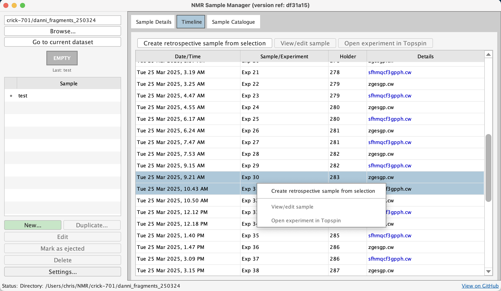

The Samples App
Type samples in TopSpin to open the GUI. The window navigates to
your current dataset directory and shows three views: a samples list, a timeline,
and a catalogue. If the window is already open, typing samples
brings it to the front.

Timeline
The timeline shows all experiments in chronological order, colour-coded by dimensionality (black = 1D, blue = 2D, green = 3D+). Even without sample annotations, this gives you a navigable index of your data. Double-click any experiment to open that dataset in TopSpin.

For SampleJet users, holder positions appear automatically in the timeline from experiment parameters, without any annotation required.
Retrospective Annotation
Right-click in the timeline and select the experiments that correspond to a single sample. The system sets the created and ejected timestamps from the first and last selected experiments. Fill in the form and save — the annotation appears as if you'd created it at the time.
Catalogue
The catalogue shows all samples across your configured root directories, with search and filtering. Use it to find samples by user, buffer composition, sample components, or any text in the label or notes. Configure root directories via Settings to enable multi-directory browsing.

Creating and Editing Samples
Click New... to create a sample annotation. All fields are optional:
- People: users, research groups
- Sample: label, components (name, concentration, isotopic labelling)
- Buffer: pH, solvent, chemical shift reference, buffer components
- NMR Tube: diameter, type, sample volume, SampleJet position
- Laboratory Reference: sample ID, lab book entry
- Notes: free-form text

The file is saved as YYYY-MM-DD_HHMMSS_[label].json in the
experiment directory. Creating a new sample automatically ejects any previously
active sample — you can only have one sample in the magnet at a time.
Select a sample and click Edit (or double-click) to modify it. Click Duplicate... to copy it as a template — useful for titration series or experiments where only a few parameters change.
Ejecting and Deleting
Click Mark as Ejected to timestamp when a sample was removed. Ejected samples can be deleted (this removes the JSON file; experiment data is unaffected). Active samples must be ejected before deletion.
Schema Versioning
New samples use the current schema version. When opening samples created with
older schema versions, Sample Manager loads the correct historical schema and updates it
automatically. Saving an old sample upgrades it to the current version. If a
required schema version isn't installed, update your installation via
git pull.